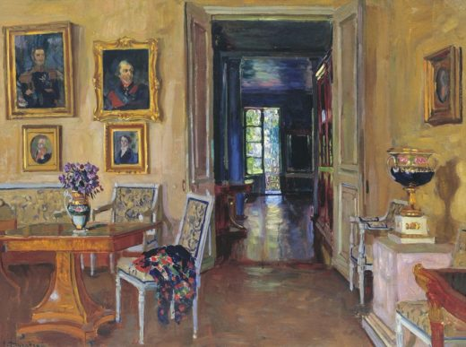

Страницы авторов "Тёмного леса"
Литературный Кисловодск и окрестности
Пишите нам! temnyjles@narod.ru
Одна из важнейших составляющих отечественной культуры - загородные усадьбы с их искусством, архитектурой, бытом, укладом жизни. Едва ли не больше всего их было в Подмосковье, где до сих пор сохранился ряд интереснейших памятников усадебной архитектуры. Некоторые усадьбы, находившиеся близко от Москвы, со временем оказались в городской черте в бедных достопримечательностями новых "спальных" районах. Казалось бы, теперь, после вхождения в черту Москвы их изучение должно было приобрести новый импульс, но по ряду причин этого не произошло. Московские историки и краеведы по традиции продолжали заниматься городом в его исторических границах, "не опускаясь" до усадеб. В свою очередь исследователи памятников Подмосковья "перешагивали" через них, интересуясь только тем, что расположено за пределами столицы. Таким образом, вокруг бывших "подмосковных" образовалась "мертвая", не исследуемая зона. В конечном счете, это привело к гибели ряда ансамблей. Рассказывает Михаил Коробко, историк искусства, член правления Общества изучения русской усадьбы.
До крестьянской реформы 1861 г. усадебной темой занимались почти исключительно лица, специальностью которых было воспевание "добродетелей" различных вельмож. Отдельные материалы заказывались им владельцами, либо понимавшими значимость своих усадеб, либо стремившимися в угоду собственному тщеславию запечатлеть на скрижалях истории результаты своей деятельности. Редкостью были специальные работы об усадьбах мемориальных, связанных с различного рода историческими деятелями или хранящих память о каких-либо существенных событиях усадебной жизни: открытие памятника, приезд представителя царствовавшей династии и т.п. Бурное развитие исторической науки и журналистики в 1861-1917 гг., издание журналов "Русский архив", "Русская старина", "Древняя и новая Россия", "Исторический вестник", сборников различных исторических обществ, отдельных частных архивов и т.п. способствовали накоплению огромного фактологического материала по усадьбам, не потерявшего своего значения до сих пор.
К пореформенному времени относятся и первые попытки систематического исследования усадеб, относящихся к конкретным исторически сложившимся территориям. Так появились описания Сетунского и Сосенского станов (бывших административно-территориальных единиц) Московского уезда, авторы которых И.Е. Забелин и Д.О. Шеппинг в подавляющем большинстве случаев обращались к усадебной тематике. Крупнейшее исследование Подмосковья было предпринято братьями В.И. и Г.И. Холмогоровыми. Они изучили и частично опубликовали так называемые исторические материалы практически по всем (за небольшим исключением) подмосковным селам и церквям, базирующиеся на документах XVI-XVIII вв., выявленных в Московском архиве Министерства юстиции. Здесь так же, как в трудах И.Е. Забелина и Д.О. Шеппинга, "усадебный материал" преобладает над остальным.
Принципиально новым шагом в историографии начала ХХ в. стало художественное изучение усадеб. Они впервые начали восприниматься в контексте развития отечественного искусства. Этому способствовали и переоценка архитектурного наследия, на котором раньше лежало клеймо аракчеевщины, и развитие искусствоведения как науки. Во многом закономерно, что оно началось с подмосковных, а именно с Архангельского, статья о котором была опубликована в 1904 г. в журнале "Мир искусства". Огромная роль в выявлении и популяризации наследия художественно значимых усадеб принадлежит журналам "Старые годы" и "Столица и усадьба" (последнее издание носило более салонный характер, что ни в коем случае не умаляет его значения). Их постоянные авторы: В.В. Верещагин, Н.Н. Врангель, Г.К. Лукомский, С.К. Маковский и др. - своими публикациями, по сути, сформировали дошедший до нас без существенных изменений круг так называемых известных усадеб. Н.Н. Врангелю принадлежат первые попытки теоретизирования и обобщения в этой области. От него же пошла традиция отрицания современной ему усадьбы, т.е. усадьбы пореформенного периода.
Первая попытка регионального обобщения усадебного материала, предпринятая как раз на примере Московской губернии, принадлежит Ю.И. Шамурину. Товариществом "Образование" в серии "Культурные сокровища России" в 1912-1914 гг. были выпущены его книги под общим названием "Подмосковные".
| С. Жуковский. Усадьба в зелени. 1906 |
В 1922 г. в Москве было организовано Общество изучения русской усадьбы (ОИРУ). Его председатель В.В. Згура выдвинул даже термин усадьбоведение, подразумевая под ним исследование самого разнообразного материала. ОИРУ систематически изучало усадьбы, разбив страну на ряд регионов. Однако свет увидела только работа по усадьбам бывшего Московского уезда. Помимо этого общество выпускало научные сборники и отдельные исследования.
После разгрома в конце 1920-х - начале 1930-х гг. ОИРУ, да и исторического краеведения в целом, изучение ближних окрестностей Москвы в основном свелось к узкому кругу наиболее значимых и музеефицированных памятников Архангельского, Коломенского, Кускова, Останкина, уже давно введенных в научный оборот. Положение постепенно меняется только с 1940-х гг., когда произошла переоценка отечественного архитектурного наследия и началась публикация сведений о памятниках, погибших во время войны. Однако попытка обращения к усадьбе как явлению русской истории и культуры была сделана только в книге С.Б. Веселовского, В.Л. Снегирева и Б.С. Земенкова "Подмосковье: Памятные места в истории русской культуры ХIV-ХIХ веков", выдержавшей два издания (в 1950-х и в начале 1960-х гг.).
Существенную роль в систематическом изучении усадеб сыграла работа по составлению так называемого Свода памятников истории и культуры, начавшаяся в 1970-е гг. Специалисты ряда научно-исследовательских организаций (Институт искусствознания; Институт истории СССР, ныне - российской истории; Институт культуры, ныне - Институт культурологии) провели экспедиционное обследование некоторых центральных областей страны, выявив и поставив на государственную охрану многие объекты, в том числе и усадьбы в ряде областей. Работа над Сводом инициировала издание разнообразных материалов к нему, списков памятников. Отметим изданные небольшими тиражами для служебного пользования списки памятников архитектуры и истории Москвы, состоящие на государственной охране (или предложенные к постановке на нее), включившие ряд усадеб бывшего Московского уезда, которые со временем оказались в городской черте. Фундаментальный материал об усадьбах, вошедших в черту Москвы, публикуется в продолжающемся издании "Памятники архитектуры Москвы". По сути, в духе Свода выдержан и двухтомник "Памятники архитектуры Московской области", изданный в 1975 г. К сожалению, опубликованный материал относится к середине 1960-х гг. и зачастую не отражает реального состояния памятников (то же можно сказать и о продолжающемся в наше время четырехтомном издании с аналогичным названием).
В последние десять лет произошло стремительное развитие усадьбоведения (как его понимал В.В. Згура). Усадьбой стали заниматься более глубоко, чем раньше. Сложилось понимание ее как фундамента русской культуры второй половины XIX - начала ХХ в. Значительный прогресс в этой области стимулировали воссоздание ОИРУ, издание ежегодных сборников, возобновленных в 1994 г., а также отдельных монографий - "Усадебное ожерелье Юго-Запада Москвы", "Мир русской усадьбы" "Архитектура русской усадьбы", "Дворянские гнезда России", серии "Культурное и природное наследие Москвы", издаваемой с 1995 г. Советом по изучению и охране культурного и природного наследия при Президиуме РАН, серии "Русская усадьба", начатой еще до Октябрьского переворота и возобновленной в 2002 г., и др. В целом историография свидетельствует о постоянном расширении информации об усадьбах, чего не скажешь о комплексе монографически изученных объектов, необходимом для широкомасштабных выводов.
Многие усадьбы, не будучи художественными шедеврами, обладают своеобразным архитектурным обликом. Зачастую это единственные объекты, которые позволяют придать наглядность урокам истории и москвоведения - рассказам о специфике местной истории, различных архитектурных стилях и т.п. Один из основных вопросов, возникающих во время экскурсий или уроков: что же такое усадьба? Поэтому объяснить учащимся смысл этого слова и его основных синонимов просто необходимо.
| С. Жуковский. Перед террасой. 1912 |
Термин усадьба (в понимании, близком к современному) прослеживается по крайней мере с XVII в., хотя встречался он тогда достаточно редко. В таких документах, как писцовые и переписные книги, чаще употребляются выражения двор вотчинников и двор помещиков в зависимости от существовавших тогда форм собственности на землю (до 1714 г. различались вотчины - родовые или приобретенные имения и поместья - имения, дававшиеся дворянам на время службы). Обычно владельцы старались выкупать поместья в собственность, которые таким образом становились вотчинами. Именно такая судьба постигла Знаменское-Садки, Узкое и др. Отметим, что форма владения нашла отражение и в топонимике Знаменского-Садков, которая одно время носила название Знаменская вотчина. Вотчинными владениями считались и подмосковные загородные дворы, кольцо которых опоясывало город.
Специальный тип населенного пункта сельцо обозначал усадьбу, не имевшую церкви, вне зависимости от вида собственности на землю, на которой она была расположена. Например, сельцом всегда считались Люблино или Михалково, долгое время этот статус имело Воронцово и т.п.
Небольшую часть подмосковных усадеб с XVIII в. традиционно называют мызами. Из этого вовсе не следует, что они принципиально отличались от соседних. Мызами обычно именовались усадьбы, находившиеся в окрестностях Петербурга, и их владельцы стали так же называть усадьбы, расположенные в других регионах страны.
Чаще всего в быту, в письмах любая усадьба, за исключением загородных дворов, именовалась деревней, вне зависимости от реального статуса населенного пункта, в котором она находилась. В свою очередь, в обиходной практике термином усадьба зачастую называли крестьянские дворы; кроме того, с 1839 г. в Московской и других губерниях на территориях удельных имений, т.е. принадлежавших царствовавшей династии, существовали удельные образцовые усадьбы (Клязьминская, Коломенская, Тайнинская и др.), в которых были поселены выпускники Удельного земледельческого училища.
Исследование отечественных словарей и справочников показало, что первые попытки определения усадьбы как понятия относятся к пореформенной эпохе. Это явление вполне закономерно, так как именно в то время русская усадьба, неизменная в течение нескольких столетий, бывшая реалией, не требующей комментариев, приобрела новые, не свойственные ей ранее черты, претерпев значительную трансформацию. В 1867 г. увидел свет последний том знаменитого Словаря живого великорусского языка В.И. Даля, который произвел этот термин от слова усада (в западной транскрипции усадище или усадбище), определяя усадьбу как "господский дом на селе, со всеми ухожами (угодьями. - Авт.), садом и огородом", т.е. жилье и прилегающая к нему территория. Из современных толкований термина усадьба различными справочниками, по нашему мнению, является наиболее удачным следующее: "усадьба - это вид жилья". Однако и оно, не будучи достаточно четким, оставляет достаточно широкие возможности для различных интерпретаций специалистами. Одни вкладывают в это понятие только основной архитектурный ансамбль с парком или вне парка, другие включают в него и хозяйственные постройки, третьи, наоборот, распространяют его на всю территорию, ранее принадлежавшую владельцам усадьбы, т.е. фактически используя как синоним термина имение - относительно крупное землевладение с исторически обусловленными границами.
|  | С. Жуковский. Комната в имении "Брасово" вел. кн. Михаила Александровича. 1916 |
Действительно, владелец усадьбы одновременно является и владельцем имения. Употребление этого термина снимет ряд проблем, возникающих при использовании одного лишь слова усадьба, поскольку недалеко от усадьбы, но за ее пределами могут находиться какие-либо объекты, сооруженные ее же владельцами, в силу различных причин не описываемые в литературе вместе с нею. Это церкви, аллеи, мосты, хозяйственные постройки, памятники и т.п. На территории одного имения может быть не одна, а несколько усадеб, появление которых вызвано разными причинами. Так, на территории Влахернского имения князей Голицыных одно время существовали две усадьбы: Кузьминки и Полуденовка.
Изначально все имения не имели усадебных и других построек и представляли собой лишь землю с угодьями, купленную или полученную за службу их владельцем. Поэтому по отношению к имению усадьба вторична. Она не есть непременный его атрибут. Еще перед 1917 г. существовали имения, которые можно назвать безусадебными. В силу природных и климатических условий они были более характерны для засушливого степного юга, нежели для центральной части страны. Большие имения с усадьбами приобрести частным лицам было достаточно сложно, поэтому такие владения, как Знаменское-Садки, Люблино, Черемушки (в дореформенное время), Кузьминки, Узкое, Ясенево и др., переходили из рук в руки обычно или по наследству, или путем браков и других родственных связей. Поэтому несколько поколений владельцев успевали обустроить свое родовое гнездо, сохранив часть созданного предками и привнеся в него что-то свое. Нелишне отметить, что до реформы 1861 г. имения делились на населенные (т.е. имеющие в своем составе крестьянские поселения) и ненаселенные, владельцами которых были лица, не имеющие права владения крепостными, т.е., как правило, недворянского происхождения.
Помимо усадьбы в имении мог быть ряд других элементов, основной из которых - экономия, т.е. часть, направленная преимущественно на ведение сельского хозяйства. Этот термин известен со второй половины XVIII в. Акцент на понятии экономия необходим, поскольку на практике без достаточных оснований к усадьбам относят и постройки экономии: конные и скотные дворы, амбары, оранжереи и теплицы и т.п., мотивируя это их функциональным и стилевым единством. Между тем, предназначение зданий экономии заключалось в обслуживании нужд имения, а не усадьбы. Одной из причин, способствующих формальному сведению всех близко расположенных основных построек имения в единое целое под названием усадьба, является используемое архитекторами деление плана усадеб на хозяйственную и прогулочные зоны. Оно на самом деле достаточно условно, поскольку ряд хозяйственных построек, вроде скотного двора, амбаров, сараев и т.п., к усадьбе не имеет никакого отношения, принадлежа к экономии. Собственно хозяйственная зона усадьбы, существующая для непосредственного ее обслуживания, обычно достаточно невелика. В ряде случаев она может смыкаться с экономией, но на практике это происходило не всегда. Отметим, что экономия может составлять единое архитектурное целое, как, например, в Черемушках или в Узком, а может состоять из ряда самодостаточных хозяйственных комплексов различного назначения, например Садоводство, Слободка, Мельница, Конный и Скотный дворы в Кузьминках. Отметим, что в пореформенную эпоху экономия обычно сводится к минимальному количеству хозяйственных комплексов, так как у владельцев все меньше возможностей поддерживать все хозяйство на прежнем уровне.
| С. Жуковский. Осеннее утро. Середина 1920-х |
Термин имение в качестве землевладения на практике сохранял свое значение и некоторое время после 1917 г. Так, декретом Совнаркома от 17 марта 1922 г. основные пушкинские места в Псковской губернии: Святогорский монастырь, в котором был похоронен поэт, Михайловское и соседнее с ним Тригорское - были объявлены единым заповедным имением, переданным Наркомпросу. Изучение имений, объединяющих усадьбы и экономии, заставляет специалистов обратиться к картографическим источникам для локализации границ землевладения и фиксации всех сооружений, построенных на конкретной территории, что позволит дать рекомендации по ее комплексному использованию и воссоздать синтез, существовавший здесь между культурой и хозяйством.
Одним из следующих по значимости понятий в изучении усадеб является термин дача. Как и усадьба, он достаточно многозначен и в литературе зачастую употребляется бездумно. Первоначально дачей назывался участок земли, либо принадлежавший государству, либо полученный дворянином за службу или приобретенный им. Понятно, что следующие термины - имение, вотчина, поместье - являются синонимами и могут быть обобщены одним словом - землевладение. Казенные дачи просуществовали вплоть до 1917 г. Те из них, чьи территории были в значительной степени заселены, обычно назывались лесными дачами. С XVIII в. дачами стали называть отдельные здания в усадьбах, сдававшиеся внаем на летние сезоны. По мере необходимости под дачи - помимо господского дома и флигелей - использовались любые постройки, которые можно было приспособить для временного жилья: оранжереи, павильоны, службы и т.п. Помещений специально для дачников не возводили, поэтому до середины XIX в. не существовало и особой дачной архитектуры. Первой дачей в этом понимании стало Свиблово (Свирлово) Плещеевых (ныне в черте Москвы), нанятое голштинским герцогом Карлом-Фридрихом в 1722 г., которого вместе с приближенными можно считать первыми подмосковными дачниками. Не позднее второй половины ХVIII в. дачами стали называть и небольшие загородные ненаселенные имения с усадьбами, которые обычно располагались недалеко от Москвы и уездных городов и служили своим владельцам лишь местом летнего отдыха, например Черемушки. Как правило, обработка земли там в принципе отсутствовала, а хозяйство сводилось к поддержанию усадьбы для различного рода "затей".
| С. Жуковский. Княжеский дом осенью. 1909 |
Появление первых усадеб относится к далекому прошлому. Даже Москва на ранней стадии своего существования была всего лишь усадьбой. После того как она стала княжеской резиденцией, рядом с княжеским дворцом появились усадьбы придворных, которые первоначально не выходили за пределы кремлевских стен. Однако вскоре знать, которой стало там тесно, начала строить хоромы за пределами Москвы, захватывая новые территории в ее окрестностях. Так появились загородные дворы. Можно сказать, что это усадьбы в их чистом виде, где сельскохозяйственное производство, сведенное к минимуму, играло более декоративную роль, нежели действительно было направлено на удовлетворение насущных потребностей владельца. Именно загородным дворам город обязан своей исторической "усадебной" планировкой, остатки которой сохранились до нашего времени.
Параллельно с загородными дворами существовали усадьбы, устроенные в вотчинах и поместьях, откуда в город доставляли сельскохозяйственную продукцию (со временем некоторые из них также оказались в черте столицы, перестав быть подмосковными в прежнем значении этого слова). Посещения владельцами своих загородных владений обычно были вызваны лишь проверкой хозяйственной деятельности приказчика или управляющего, а иногда и желанием развлечься псовой или соколиной охотой. Поскольку жить вдали от городских укреплений было небезопасно, загородные усадьбы имели лишь лица, принадлежавшие к высшей знати, располагавшие средствами для того, чтобы содержать большое число вооруженных слуг, хотя и это спасало далеко не всегда, поскольку обычным делом были татарские набеги и буйства московских властителей. Так, в 1568 г. Иван Грозный со своими опричниками уничтожил немало подмосковных усадеб, принадлежавших его приближенным, имевшим несчастье подвергнуться опале. Большинство усадеб в Подмосковье, в том числе Алтуфьево, Воронцово и Ясенево, были стерты с лица земли в начале XVII в. во время событий Смутного времени. Поэтому ни одна древняя подмосковная усадьба полностью не сохранилась, лишь от некоторых из них уцелели каменные церкви.
Для усадеб, созданных или обустроенных после Смутного времени, таких как Виноградово, Черемушки, Знаменское-Садки, Узкое и др., характерна большая свобода планировки. Продумывая ее, владельцы обычно исходили из собственных чисто утилитарных потребностей, ориентируясь на удобство пользования угодьями. Тогдашние господские дома представляли собой двух-трехэтажные деревянные постройки с затейливыми верхами, наподобие хором Лопухиных в Ясеневе. В приусадебных садах выращивали овощи и фрукты, иногда цветы, лечебные растения, привозные заморские деревья. Пруды обыкновенно имели только утилитарное значение. Их использовали для хозяйственных целей и разведения рыбы. Иногда для рыбы сооружали специальные садки, что нашло отражение в топонимике одной из рассмотренных нами усадеб - Знаменское-Садки.
| С. Жуковский. Белый дом. 1906 |
Европейская эстетика стиля барокко сказалась на усадебной культуре начиная с петровского времени. Тогда по образцам западноевропейских регулярных (т.е. французских) садов владельцы стали создавать усадебные парки правильного геометрического характера. К середине XVIII в. планировка усадеб приобрела более строгое осевое построение и симметрию отдельных частей. Ее образцом в определенной степени является Ясенево, где при Лопухиных был сооружен господский дом с парными флигелями. Усложняется и регулярная планировка парков, которые украшаются различными павильонами и беседками, мостами, памятниками, скульптурой и т.п., как это было сделано графами Шереметевыми в Кускове. Вид парковых павильонов приобретают даже храмы, например церкви в Знаменском-Садках (не сохранилась) и Черемушках.
Вторая половина XVIII в. - самый значимый период обустройства подмосковных усадеб. В 1762 г. император Петр III освободил дворянское сословие от обязательного несения службы. После этого в ближайших окрестностях Москвы появилось значительное число крупных усадебных комплексов. Большинство из них, в том числе Братцево, Васильевское (Мамонова дача), Знаменское-Садки, Кунцево, Люблино, Нескучное, Останкино, Очаково, Покровское-Стрешнево, Троекурово, Узкое, Черемушки, были сооружены в соответствии с вошедшим в моду стилем классицизма. Лишь в архитектуре относительно небольшой части усадеб - Михалкова, ансамбля парадного въезда в Воронцове, хозяйственного комплекса (экономии) в Черемушках и т.п. - использованы формы псевдоготики, образцами которой были известные императорские резиденции: Петровский дворец и Царицыно. Старые регулярные парки постепенно уступили место пейзажным, мода на которые пришла из Англии. Иногда, как в Кузьминках, пейзажный и регулярный парки существовали параллельно.
После Отечественной войны 1812 г. новые усадьбы в пострадавшей от военных действий Московской губернии стали возводить существенно реже, в основном ограничиваясь приведением в порядок уже существующих. Одной из немногих усадеб, в которых размах строительных работ остался прежним, были Кузьминки. Большинство зданий там выполнено в традициях ампира - последнего, яркого периода классицизма. К середине XIX в., по мере развития в России капиталистических отношений, объемы строительства, ведущегося в усадьбах, еще более сократились. По сути, все работы сводились к замене или сооружению отдельных построек, дополнявших прежние усадебные комплексы, наподобие господского дома в Алтуфьеве, конного и скотного дворов в Знаменском-Садках, отдельных построек в Узком и т.п. Нужно отметить, что уже к тому времени многие подмосковные усадьбы сменили своих владельцев. По свидетельству москвички Е.П.Яньковой, родившейся еще в начале царствования Екатерины II, "вся Москва была окружена загородными дворцами и подгородными поместьями, а теперь едва ли двадцатая часть уцелела и находится еще в руках дворян, уж я не говорю, чтобы в руках потомков прежних владельцев, что перешло в казну под разные заведения, что куплено богатым купечеством".
В результате крестьянской реформы, нанесшей серьезный удар по усадебной культуре, сельское хозяйство перестало быть беспечным получением оброков, а превратилось в коммерческое и техническое предприятие, потребовавшее оборотного капитала, серьезного труда и специальных знаний. При таких условиях часть дворянства нашла выгодным заниматься более прибыльными предприятиями, ликвидировав свои имения с усадьбами из-за невозможности справиться с новыми условиями экономического быта. Это обусловило гибель, частичные утраты или реконструкцию многих усадебных комплексов, таких как Алтуфьево, Воронцово, Михалково и многих других. Процесс смены владельцев приобрел повсеместный характер по сравнению с дореформенным временем. В отличие от него новыми хозяевами усадеб оказались не только дворяне и купцы, а выходцы из самых разнообразных общественных слоев: крестьяне, духовенство, почетные граждане, заводчики и фабриканты, различного рода предприниматели, крупные капиталисты. Именно последним принадлежали наиболее значительные усадебные ансамбли, возникшие или капитально реконструированные в пореформенную эпоху, такие как Виноградово и Черемушки.
| А. Васнецов. В тени лип. Демьяново. 1907 | |
| А. Васнецов. Царский пруд. Демьяново. 1915 | |
| А. Васнецов. Пруд и подземелье. Демьяново. 1915 |
Нужно отметить, что немало новых владельцев усадеб ускоренными способами получали дворянство (тем ли иным способом добившись соответствующих чинов или сделав крупные пожертвования на благотворительные цели, по сути являвшиеся завуалированной покупкой этих же чинов). Однако даже в пределах одной семьи дворянство могло не распространяться на всех. Так, если новый владелец Черемушек В.И. Якунчиков всю жизнь оставался купцом, его сын, Н.В. Якунчиков, уже был потомственным дворянином и даже имел придворное звание камер-юнкера. С другой стороны, значительно более частым явлением стала запись дворян, занявшихся предпринимательской деятельностью за пределами своих имений, в купечество, так как без этого для них оказывался невозможным ряд торговых операций. Именно это сделал владелец Кузьминок князь С.М. Голицын. Эти и другие примеры наглядно показывают ускорившийся процесс сближения сословий.
| С. Жуковский. Брошенная терраса. 1911 |
Вступление России в Первую мировую войну в 1914 г. ознаменовалось в том числе очередным и последним для него кризисом усадебного хозяйства. Многие служащие в усадьбах и имениях, как и соседние крестьяне, были мобилизованы, что привело к постоянной и невосполнимой нехватке рабочих рук, хотя правительство с 1915 г. пыталось заменить мобилизованных работников военнопленными. То же самое можно сказать и о привлечении к сельскохозяйственным работам учащихся московских средних учебных заведений. Отрицательно сказалось на состоянии усадеб их превращение в госпитали и лазареты (Кузьминки, Черемушки и др.). Неудачи первого периода войны и патриотическая истерия привели к появившемуся в 1915 г. указу Николая II о ликвидации немецкого землевладения в России и национализации земель и усадеб у лиц, формально сохранявших немецкое подданство. Таким образом, невольно была создана модель более поздних событий.
Во время Гражданской войны ценности, хранящиеся в усадьбах, были вывезены в Москву, многие усадьбы уничтожены, а в тех, что уцелели, обосновались различные учреждения: дома отдыха, санатории, больницы, школы, колхозы и совхозы и т.п.; ближайшие к городу усадьбы оказались в ведении разного рода научно-исследовательских институтов. Деятельность подавляющего большинства новых владельцев привела к систематическим искажениям облика и утратам многих фрагментов усадебных ансамблей, разрушению и полной гибели части из них. То, что сохранилось и дошло до наших дней, - лишь малая часть некогда огромного усадебного наследия.
| И. Владимиров. Разгром помещичьей усадьбы, 1926 |
Несмотря на революционные перемены последнего десятилетия, проблема сохранения памятников в нашей стране осталась нерешенной. Это касается всех ее аспектов - будь то выявление, обследование, изучение памятников или даже публикация документов и издание литературы. Не может не внушать тревоги и состояние большинства усадеб - некоторые из них подверглись серьезным разрушениям в самое последнее время. Очень медленными темпами идут реставрационные работы господского дома в Люблине, о реставрации других усадеб пока остается только мечтать. Ряд объектов, среди которых огромный деревянный господский дом (дом Р.В. Германа) в Виноградове, конный двор в Знаменском-Садках, скотный двор в Кузьминках, кузницы в Кузьминках и Узком и др., по сути, брошены на произвол времени и судьбы и до сих пор находятся в аварийном состоянии; комплекс театральных зданий в Люблине искажен варварской реконструкцией и т.п. Крайне запущены все без исключения усадебные парки, за которыми нет правильного ухода. За время, прошедшее с 1917 г., они частично были вырублены, затем одичали и разрослись, превратившись в лесные массивы, сохранившие лишь отдельные элементы прежних парков: некоторые аллеи и дорожки, крупные старые деревья и т.п. Как правило, от прежних насаждений осталось немного - почти везде меньше десяти процентов. Аналогичные примеры можно продолжать и продолжать... Как видим, перспективы по части сохранения памятников пока оптимизма не внушают. Тем актуальнее представляется изучение усадеб всеми, кому небезразличны история русского искусства и прошлое Москвы.
Последнее изменение страницы 9 Dec 2018
{kind=link}
{kind=link}
{kind=link}
{kind=link}
{kind=link}
{kind=link}
{kind=link}
{kind=link}
{kind=link}
{kind=link}
{kind=link}